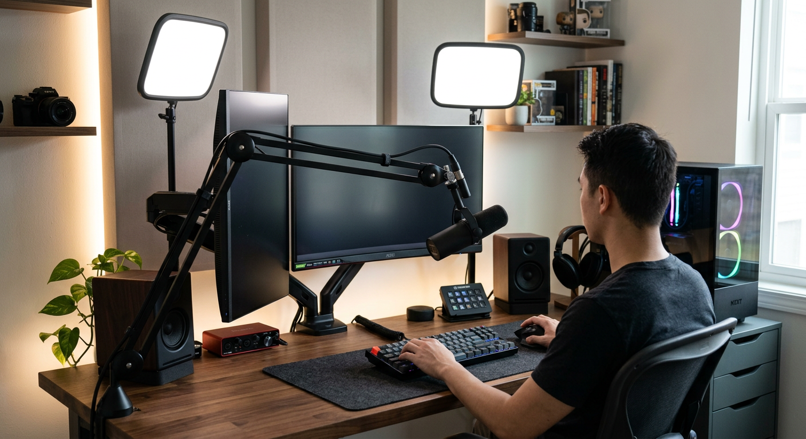

Best Cable Management Kits
Updated for 2026 • Practical routing and clutter-control recommendations.
Disclosure: As an Amazon Associate, we may earn from qualifying purchases.

Quick picks by setup type
- Best all-in-one kit: Check on Amazon
- Best under-desk tray: Check on Amazon
- Best cable sleeve bundle: Check on Amazon
3-step cable cleanup plan
- Route power strip and adapters under desk first.
- Bundle cable paths by zone (monitor, charging, peripherals).
- Use clips/channels only where movement is minimal.
Why Trust This Guide
Recommendations are built around common desk constraints: adapter bulk, limited edge access, cable movement zones, and daily convenience for home-office workflows.
Related Guides
Monitor risers · Lighting comparison · Starter blueprint
FAQ
Are adhesive clips reliable long-term?
They work best on smooth clean surfaces and lighter cables; heavy routing needs trays/channels.
How do I hide power bricks?
Use a mounted basket or tray and keep high-heat adapters spaced for airflow.
Can cable management improve productivity?
Yes—less visual clutter and easier device access reduce daily friction.